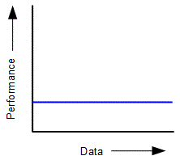
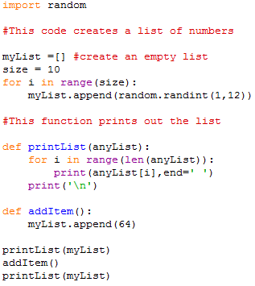

<div id="jsn-maincontent" class="span9 order1  row-fluid">
					<div id="jsn-maincontent_inner">
						<div id="jsn-centercol"><div id="jsn-centercol_inner">
									<div id="jsn-mainbody-content" class=" jsn-hasmainbody">
								<div id="jsn-mainbody-content-inner1"><div id="jsn-mainbody-content-inner2"><div id="jsn-mainbody-content-inner3"><div id="jsn-mainbody-content-inner4" class="row-fluid">
								
										
								
								<div id="jsn-mainbody-content-inner" class="span12 order1 ">
		
										<div id="jsn-mainbody">
										<div id="system-message-container">
	</div>

										<div class="item-page" itemscope itemtype="https://schema.org/Article">
	<meta itemprop="inLanguage" content="en-GB" >
	
		
						
		
	
	
		
								<div itemprop="articleBody">
		<p></p>
<h1 style="text-align: center;">Constant execution performance&nbsp;O(1)</h1>
<p><strong style="line-height: 1.5;">Constant execution time O(1)<br></strong>Some algorithms will always take the same amount of time to run, regarless of the size of data you are using. The execution time remains the same. This is known as O(1).</p>
 
<p>An analogy of something that takes the same amount of time regardless of the size of the data you are using would be buying something at a supermarket till. It doesn't matter what product you are buying. The operator will pick up the item, scan it, and then put it down again. Every item takes the same amount of time to process. Each time you press a key on the keyboard, the amount of time it takes for the computer to capture the key selected is always constant. It doesn't matter what key you press. We can represent this as a graph:</p>
<p></p>
<p>We can see from this that the performance of an algorithm doesn't depend on the size of the data structure. Classic examples in programming include the push and pop operations for a stack (adding and removing data from the stack) and adding and removing data from a queue. It doesn't matter what size the stack or queue is, each of these operations will require the same number of steps to carry out.</p>
<p><strong>Odd or even? An example in Python<br></strong>If you give the following algorithm a number, it will calculate whether the number is odd or even. It does this by dividing the number by 2 and examining the remainder. If it is a 1, then the number must have been odd. If it is a zero, it must have been 0. It doesn't matter what size the original number is. The time that the calculation will take will always be the same.</p>
<p style="margin-left: 30px;"><strong>def oddeven(num):</strong><br><strong>&nbsp; &nbsp; if num%2 == 1:</strong><br><strong>&nbsp; &nbsp; &nbsp; &nbsp; print (num, 'is odd')</strong><br><strong>&nbsp; &nbsp; else:</strong><br><strong>&nbsp; &nbsp; &nbsp; &nbsp; print (num, 'is even')</strong></p>
<p style="margin-left: 30px;"><strong>temp = int(input ('Please enter your number &gt;&gt;&gt; '))</strong><br><strong>oddeven(temp)</strong></p>
<p><strong>Another example in Python</strong><br>Consider the following code. It creates an array that has 10 numbers to start with between 1 and 12.</p>
<p></p>
<p>Now we will write a function called addItem to add the number 64 to our array.</p>
<p></p>
<p>When you run the algorithm to add a single piece of data to the existing list, it doesn't matter what size the array is. It will add an extra data item, regardless of whether the array is 10 elements long or 100000 elements long. It doesn't matter what size the data we want to add to the array. We can therefore describe this in Big O notation as and order of 1, or O(1).&nbsp;</p>
<p class="QuestionStyle"></p>	</div>

	
							</div>

									</div>
				
							</div>
							
				        							
							
							</div></div></div></div></div>			
							
							
		        				</div></div> 
				</div></div>